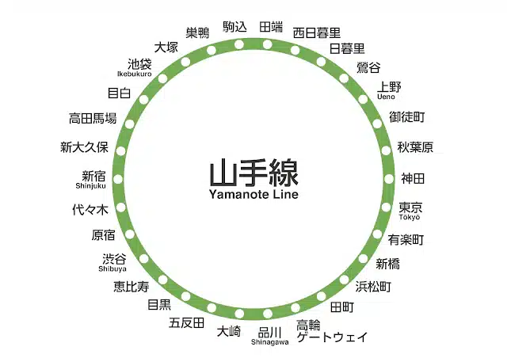
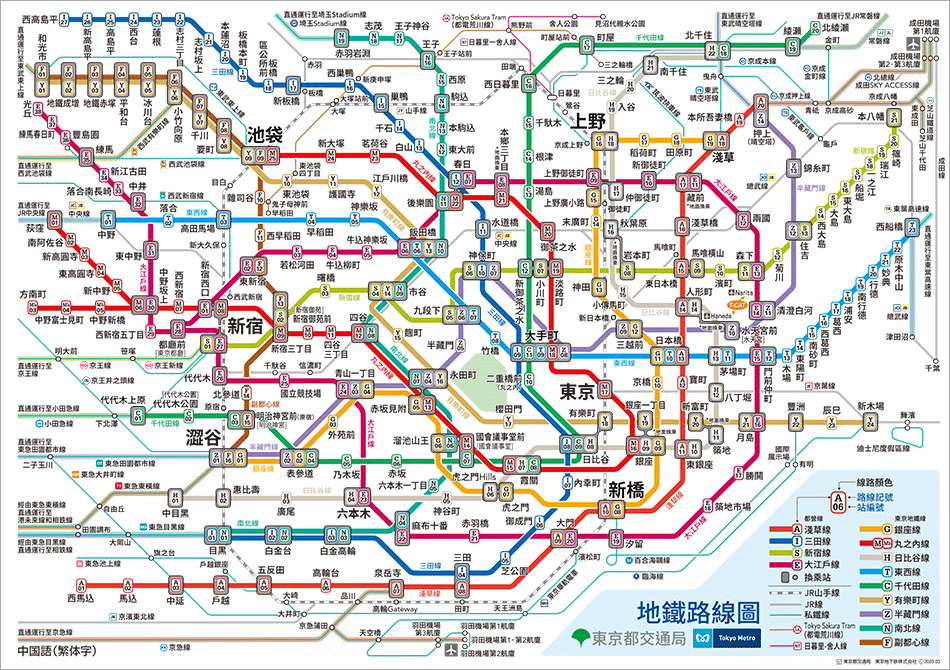

上課外行程說明
本次上課外行程採半自助方式，會帶大家到景點後就自由行動，三餐也自己吃。
- 可以先研究有沒有特別想去的店家或景點。
- 想跑別的地方就查東京地鐵，路線以山手線為基準最好認。
- 週一～週三安排在東京西側、後兩天再往東京東側；移動時務必結伴同行。
東京鐵路圖（以山手線為主）


新宿→原宿→澀谷在西側、上野→秋葉原在東側，都在山手線上，坐環狀線很好記；淺草、晴空塔在更東邊，從上野轉地鐵過去。實際轉乘用 Google 地圖查最快。
本次上課外行程採半自助方式，會帶大家到景點後就自由行動，三餐也自己吃。


新宿→原宿→澀谷在西側、上野→秋葉原在東側，都在山手線上，坐環狀線很好記；淺草、晴空塔在更東邊，從上野轉地鐵過去。實際轉乘用 Google 地圖查最快。